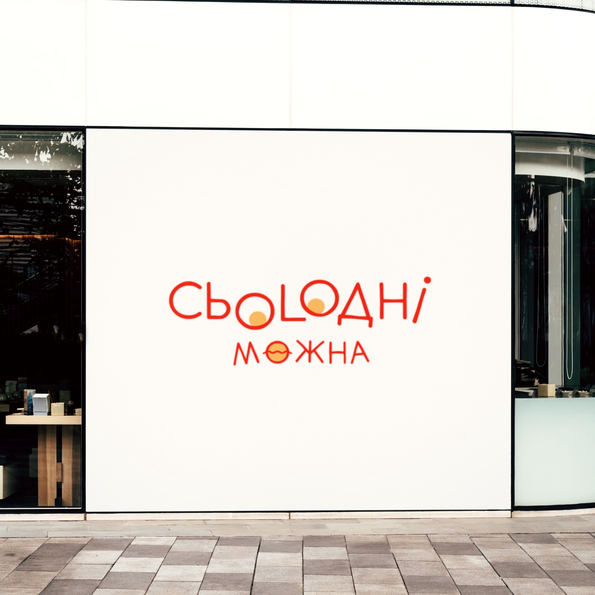
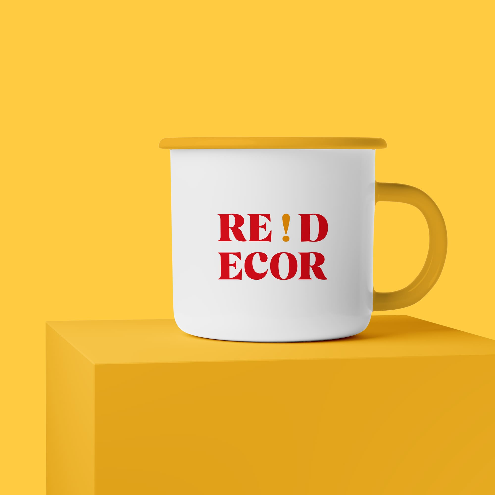
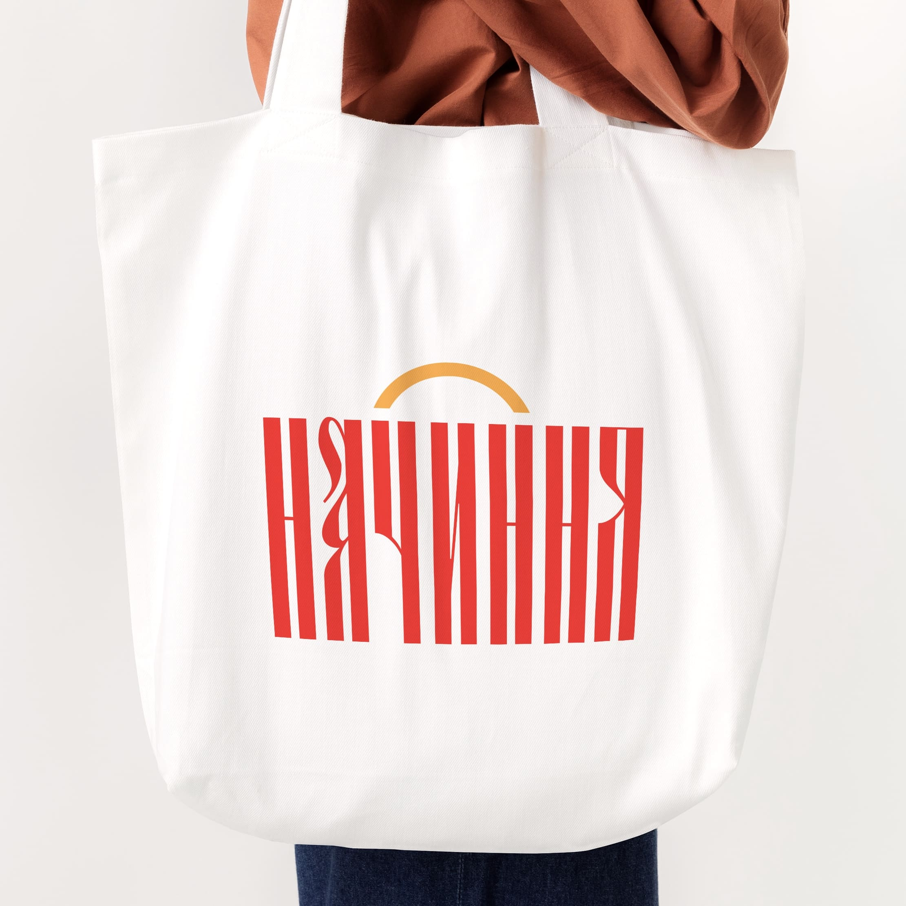

Дизайнер, creative person i просто щаслива людинка:)
Екскурс у минуле
Школа - безтурботна дівчинка з маленького містечка з великими планами
Універ - щось, якось, хотілося/не хотілося, не склалося :(
Змінити професію - why not?
Академія - там, де добре!
Сьогодення
Життя сповнене емоцій. Хороших і не дуже (нові реаліїї). Зрозуміла вислів “час летить”, але страшенно подобається мій ритм життя! Вчусь-вчусь і трішки працюю.
Те, що люблю:
Я Спайк і найдружелюбніша тваринка у світі. В народі мене називають Барбоскін. Не люблю, коли хазяйка їде на навчання і страшенно обожнюю її приїзди.
Голосно сказано «професійна»! Але на шляху до того. Наразі подобається брендинг. І ось кілька моїх робіт:
  
SOCIAL MEDIA